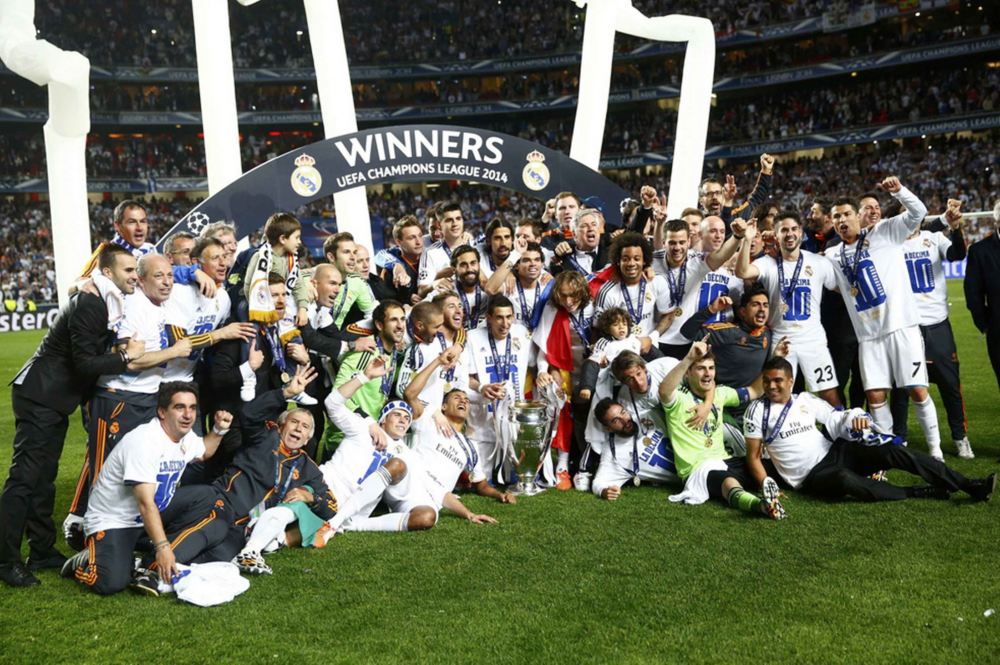

Култовият журналист от вестник „Ас“ Томас Ронсеро публикува надъхващ коментар за Реал Мадрид преди мача с Атлетико, който е тази вечер на „Калдерон“. Двата тима се изправят един срещу друг в битка от Шампионската лига. Преди 11 месеца Реал би „дюшекчиите“ и спечели Десетата. От друга страна, обаче тимът на Диего Симеоне се намира в серия от победи над градския противник. Ето и гледната точна на Ронсеро, който е сред най-запалените поддръжници на Реал Мадрид в испанската преса:
Събудих се в четири сутринта, но не беше кошмар. Различно беше. Събудих се с усмивка и луд вик: „Гооооол!“ Изживях отново емоцията от незабравимата глава на Серхио Рамос в Лисабон. 92.48 минута остава завинаги като „Златната минута“ за мадридистите. Сънят продължа, както беше и в реалността на „Луш“, когато прегърнах сина си. Момчето се нахвърли върху мен, защото разбра, че баща му не го е излъгал, когато му е говорел за Десетата още от бебе!
След това настръхнах чувайки мелодията от химна на Десетата. Анчелоти и футболистите промениха историята завинаги..
Манолете /б.а. журналист, който е близък до Атлетико Мадрид/, подавам ти ръкавицата за една честна игра в тези вълнуващи европейски мачове, но смятам че ще продължим. Не забравяйте, че в Европа Реал Мадрид е този, който е написал историята. Някой ден твоят Атлетико ще почука на вратата и дори може да разбере как се печели купата с големите уши. Ние имаме десет. Представете си, ако изобщо можете да го направите...
Вие имате титлата в първенството и Суперкупата, но Шампионската лига е при нас. На 24 май ние взехме Десетата. В 92.48 минута Рамос и Реал Мадрид се превърнаха в иконите на века. Това няма как да се промени. Дори вие от Атлетико да спечелите 20 поредни дербита, това което ние постигнахме ще ви тежи завинаги. Ние умеем да живеем ден за ден. Тази вечер ще играят Пепе, Рамос, Марсело, Модрич и Хамес, които не участваха при загубата с 0:4. Ще играе и Кристиано – най-добрият футболист, който стъпва по тази земя! Имам своите доводи за оптимизъм...
Реал Мадрид
Футбол свят
Националният – това ни остана
Педро: Моу промени мнението ми за него
Леки препятствия за челниците в нашата група
СНИМКИ: Тренировката на националния отбор преди двубоя с Норвегия
Спортните новини на Нова - 2 септември 2015
ВИДЕО: Джудист, олимпийски медалист игра срещу ЦСКА
СНИМКИ: 42-годишен вкара за Локо Сф в дерби
ВИДЕО: Разгромът за ЦСКА срещу Сарая с 11:0
Христо Янев: Младите момчета използват шанса си
Здравейте господин Стефанов,
Във Ваша статия определяте преминаването на Бербатов в ПАОК като "ниска топка". Не смятате ли, че това е едно трезво решение от страна на Митко, което е на практика е баланс между финансовите параметри на офертата и неговия собствен потенциал на почти 35 години? Аз мисля, че Бербатов постъпва изключително коректно, преминавайки в клуб, на чиито очаквания може да отговори с моментната си форма и потенциал. И ако както казвате лайтмотива е изключително финансов, а не игрови - къде според Вас ще има той повече шанс да играе редовно - в ПАОК или Астън Вила, примерно?
Съвсем отделна тема е, че подобен тип трансфери на футболисти от калибъра на Димитър Бербатов спокойно могат да се нарекат "добра практика" в наши дни. Когато оставят дълго градения си имидж да поработи за тяхна сметка. Дори и финансово.
ПП Примери сигурно могат да се дадат и в двете посоки, но аз ще посоча трансфера на един от най-добрите централни нападатели за всички времена - Габриел Омар Батистута в Ал Араби, когато той беше на 34 години. Нито Бати Гол бе под нивото на Митко (дори напротив), нито Ал Араби е на нивото на ПАОК, така че ...
Здравейте,
В коментара си в никакъв случай не съм тръгнал да обвинявам Бербатов за избора му, ни най-малко. Изразил съм личното си мнение, че за мен възможността да играе в Англия или Италия е по-добра от тази в ПАОК. Никъде няма нищо гарантирано. Аз не съм сигурен, че в ПАОК ще му гарантират 100% титулярно място. Астън Вила има проблеми в атака (не че ПАОК в момента няма) и смятам, че Бербатов щеше да получи доста възможности. Бербатов си е направил най-добре сметката със сигурност. Някъде да съм поставил това под съмнение? И Вие сте напълно прав подобни трансфери като този на Бербатов са добра практика и могат да се дадат много примери. Все пак обаче трябва да се сравнят няколко неща в този ред на мисли. Виждам, че много хора в коментарите дават за пример Дрогба, Джерард, Лампард и Пирло. Дрогба отиде в Китай, но той там игра само няколко месеца. След това отиде в Галатасарай, а след това се завърна в Челси и стана шампион на Англия. Сега вече е част от отбора на Монреал. Сега обаче, когато вече нямаше оферти от Англия и изборът му бе да отиде в Индия или САЩ. При Джерард и Лампард нещата са много ясни. На двамата им бе казано или прекратявате кариерите си или напускате. Много ясно е, че Джерард няма да играе за друг отбор в Англия и МЛС бе логично продължение, както впрочем и Лампард, просто Манчестър Сити се възползва от конгломерата, който създаде да го принуди да играе една година за "гражданите". Андреа Пирло получи изключително финансово предложение, за да отиде в МЛС. Не вярвам при Бербатов ПАОК да са му давали 2 милиона евро, а Астън Вила и Сампдория да са му давали по 1 милион. Това, което четох като информация в английските медии е, че офертата на Астън Вила е била някъде около 1,5 милион евро. Димитър Бербатов направи своя избор и аз най-искрено му желая успех. С моя коментар се опитах да дам една по-различна гледна точка на възможността, която той не предпочете. Единствено това целях. Уважавам изключително много Димитър Бербатов, за да му правя сметка на неговия избор.
Здравейте! В момента Дунав Русе заема заслужено първото място в Б група. Според Вас, има ли шанс отбора да играе в А група от следващия сезон?
Светослав Табаков
Преди 13 часа
Разбира се. Русе е футболен и спортен град. Има голяма нова зала, заслужава да има и отбор в елита.
Виж всички
17:27 Коста Рика освободи Кейлор Навас
14:07 Реал Мадрид се извини на Кейлор Навас
13:57 Навас чакал повече от час на летище Барахас заповед да замине за Манчестър
00:06 От Манчестър Юнайтед отвърнаха на Реал за Де Хеа
17:11 След бурната нощ, Навас тренира спокойно
ВСИЧКО ЗА Реал Мадрид
10 Трагичен Гришо-скоро ще бъде и забраван......
3 Шеф на Доброславци: "Отиваме в "Надежда" на празник...
17 Проблем или лъч надежда ?
15 Локомотив - Академик София
137 Бербатов ще играе в ПАОК FLANKER